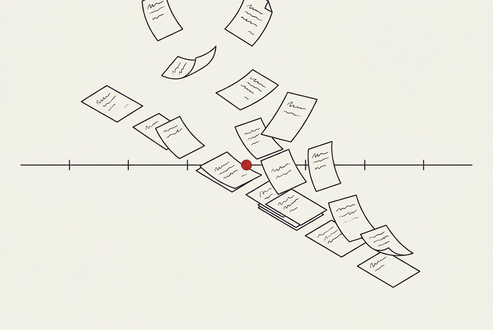

Du travail préparé. Des décisions qui restent les vôtres.
Voici les usages à construire avec votre étude, selon vos documents, vos accès et les fonctions convenues. Chaque résultat reste à relire ; les connexions et les sources externes dépendent de vos droits et des intégrations validées.
Trois clients souhaitent racheter une entreprise et envoient trois bilans pendant un appel vidéo. Avant la fin de la réunion, l'objectif est que Brigitte ait préparé l'analyse des bilans et les questions pour le vendeur, un projet de lettre de mission pour la due diligence et le contrat de cession (SPA), et qu'elle prépare le planning de signature ; l'avocat relit et valide. Avant tout enregistrement, l'étude informe tous les participants de sa finalité et recueille leur consentement. La réunion peut se tenir sans enregistrement.
Accueillir et organiser
Les premiers pas d'un dossier : vérifications, pièces reçues, premiers courriers.
Conflits d'intérêts
Simulation
Rapprocher les noms et les relations connus de l'étude pour préparer votre contrôle.
Dossier d'identification
Simulation
Rassembler les pièces reçues et signaler celles qui manquent selon votre liste de contrôle.
Lettre d'engagement
Simulation
Préparer un projet à partir de vos modèles et des éléments du mandat.
Courriels et dossiers
Simulation
Proposer un classement des échanges dans le bon dossier, à valider.
Dates et délais
Simulation
Relever les dates utiles et préparer les données d'un calcul dont vous validez les règles.
Le style de votre étude
Simulation
Préparer une réponse en suivant vos formulations et vos usages rédactionnels.
Rédiger et relire
Les textes qui sortent de l'étude : relus, comparés, dans votre style.
Traduction de travail
Simulation
Préparer une version française, allemande, italienne ou anglaise pour votre relecture.
Relecture de contrat
Simulation
Repérer les écarts par rapport aux clauses et aux consignes de votre étude.
Banque de clauses
Simulation
Retrouver une formulation déjà utilisée et la pièce dont elle provient.
Actes et modèles
Simulation
Préparer un premier projet à partir du modèle que vous avez choisi.
Accords de confidentialité
Simulation
Faire ressortir les clauses à examiner avant de vous engager.
Caviardage
Simulation
Proposer les passages à masquer avant votre contrôle et votre validation.
Préparer le contentieux
Les pièces et les faits d'un dossier contentieux, prêts pour l'audience.

Chronologie
Simulation
Réunir les événements avec leurs dates, leurs phrases sources et les doutes à vérifier.
Bordereau de pièces
Simulation
Préparer une liste ordonnée à partir des documents du dossier.
Témoignages et divergences
Simulation
Rapprocher les versions d'un même fait et montrer les passages concernés.
Jurisprudence
Simulation
Préparer une recherche dans les sources autorisées, avec des références à vérifier.
Projet de mémoire
Simulation
Organiser un premier texte à partir des faits et de l'argumentation que vous retenez.
Préparation d'audience
Simulation
Rassembler les pièces et les points à revoir dans un dossier de travail.
Délai de procédure (CPC/CPP)
Simulation
Préparer un calcul indicatif selon la procédure applicable, la notification et les règles que vous validez : point de départ, échéance, report du dernier jour et éventuelles suspensions. La procédure pénale ne connaît pas de féries judiciaires. L'avocat vérifie le calcul.
Dossier d'appel
Simulation
Réunir les pièces et les points du jugement de première instance pour préparer un dossier d'appel, que vous complétez.
Accompagner les sociétés
Les dossiers de sociétés et d'opérations, de la revue documentaire à la signature.
Revue documentaire
Simulation
Trier les documents d'une opération et préparer les questions restées ouvertes.
Organigramme
Simulation
Rapprocher les extraits disponibles et les liens entre sociétés à vérifier.
Statuts et pactes
Simulation
Faire ressortir les écarts entre statuts, pacte d'actionnaires et répartition du capital.
Procès-verbaux
Simulation
Préparer un projet selon vos modèles et les décisions qui vous ont été communiquées.
Relevés bancaires
Simulation
Rapprocher les opérations fournies et signaler les écarts à examiner.
Inventaire de succession
Simulation
Préparer la liste des éléments documentés et des pièces encore nécessaires.
Suivre les dossiers du quotidien
Les dossiers courants de l'étude, classés et prêts pour votre revue.
Pièces fiscales
Simulation
Classer les documents reçus et préparer les éléments pour votre revue.
Baux
Simulation
Repérer les clauses de loyer, d'indexation et de résiliation à examiner.
Contrats de travail
Simulation
Comparer un projet à vos modèles et préparer les points de contrôle.
Dossiers immobiliers
Simulation
Réunir les actes, extraits autorisés et échanges utiles à votre analyse.
Mémoire de l'étude
Simulation
Retrouver un dossier antérieur ou un document pertinent auquel vous avez accès.
Point du matin
Simulation
Préparer une synthèse des dossiers et des actions que vous souhaitez suivre.
Transmettre et administrer
La vie administrative de l'étude : formation, facturation, archivage.
Formation des collaborateurs
Simulation
Retrouver les exemples et méthodes que l'étude a autorisés pour la formation.
Temps de travail
Simulation
Préparer un relevé à partir des traces disponibles, à vérifier avant facturation.
Libellés de facture
Simulation
Proposer des descriptions claires à partir des prestations que vous avez validées.
Suivi des impayés
Simulation
Préparer une liste de relances et des projets de message, sans envoi automatique.
Demande d'accès aux données
Simulation
Aider à rassembler les éléments d'une réponse, sous votre contrôle.
Archivage
Simulation
Proposer un tri selon les règles de conservation que votre étude a définies.
Vos outils restent
Brigitte s'ajoute aux outils de votre étude ; elle ne les remplace pas. Vous déposez vos documents, puis des connexions en lecture seule vers votre messagerie, votre partage de fichiers ou votre logiciel de gestion peuvent être activées, si vous le souhaitez.
L'envoi, la signature et la facturation restent faits par une personne de votre étude.